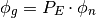
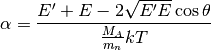
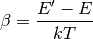
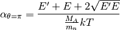
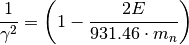
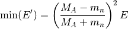
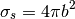
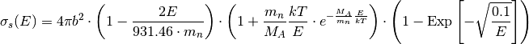

Cross Section Models – pyne.xs.models¶
This module provides functions to compute cross sections, and related quantities, from fundamental physical models. From an empirical perspective, physical models are not a valuable as experimental data. However, these functions exist to be called upon when experimental data is not available.
All functionality may be found in the models module:
from pyne.xs import models
Many of these functions may be called with either scalar or vector arguments.
The following terminology applies for this module:
- G: The number of low-resolution energy groups, indexed by g.
- N: The number of high-resolution energy groups, indexed by n.
- E_g: The low-resolution group structure [MeV]. Must be monotonic.
- E_n: The high-resolution group structure [MeV]. Must be monotonic in the same direction as E_g.
- phi: Neutron flux [n/cm^2/s].
- E: The incident neutron energy [MeV].
- E’: The exiting neutron energy [MeV].
- theta: The scattering angle [radians].
- M_A: The atomic mass [amu] of the target material.
- T: The temperature [kelvin] of the target material.
Physical Constants¶
- pyne.xs.models.k¶
Boltzmann’s constant in [MeV/K].
- pyne.xs.models.m_n¶
Neutron mass in [amu].
Partial Energy Matrix¶
When collapsing a flux spectrum or multigroup cross-section from one more finely resolved group structure (E_n) to another coarser structure (E_g) it is useful to define a partial energy operator. This describes the linear contribution of each nth group to each gth group. Calling this matrix P_E, it thereby solves the equation:

Note that for this transform to be valid both group structures must be monotonic in the same direction. All elements of P_E live on the range [0,1].
- pyne.xs.models.partial_energy_matrix(E_g, E_n)¶
Gerenates a matrix of fractional values that may be used to converts a high-resolution flux array with group structure E_n to a low-resolution flux array with group-structure E_g. The group structures must have the same monotonicity. This is useful for performing group collapses.
Parameters : E_g : sequence of floats
Lower resolution energy group structure [MeV] that is of length G+1.
E_n : sequence of floats
Higher resolution energy group structure [MeV] that is of length N+1.
Returns : pem : 2d numpy float array of fractions
This is a GxN sized matrix that when dotted with a high-resolution flux (or cross section) produces a low-resolution flux (or cross section).
- pyne.xs.models.partial_energy_matrix_mono(E_g, E_n, slope=-1)¶
Gerenates a matrix of fractional values that may be used to converts a high-resolution flux array with group structure E_n to a low-resolution flux array with group-structure E_g. Here, both of the energy arrays must be monotonic. This is useful for performing group collapses.
Parameters : E_g : 1d numpy float array
Lower resolution energy group structure [MeV] that is of length G+1. Ordered based on slope.
E_n : 1d numpy float array
Higher resolution energy group structure [MeV] that is of length N+1. Ordered based on slope.
slope : int, optional
Gives the monotonicity of E_g and E_n. If positive, then they are monotonicly increasing (lowest-to-highest). If negative, they are monotonicly decreasing (highest-to-lowest).
Returns : pem : 2d numpy float array of fractions
This is a GxN sized matrix that when dotted with a high-resolution flux (or cross section) produces a low-resolution flux (or cross section).
Group Collapse Functions¶
- pyne.xs.models.phi_g(E_g, E_n, phi_n)¶
Calculates a lower resolution flux, phi_g, from a lower resolution group stucture E_g, a higher resolution groups E_n, and a higher resolution flux phi_n.
Parameters : E_g : sequence of floats
Lower resolution energy group structure [MeV] that is of length G+1.
E_n : sequence of floats
Higher resolution energy group structure [MeV] that is of length N+1.
phi_n : sequence of floats
The high-fidelity flux [n/cm^2/s] to collapse the fission cross-section over (length N).
Returns : phi_g : numpy array of floats
The flux collapsed to G energy groups.
- pyne.xs.models.group_collapse(sigma_n, phi_n, phi_g=None, partial_energies=None, E_g=None, E_n=None)¶
Calculates the group cross-sections for a nuclide for a new, lower resolution group structure using a higher fidelity flux. Note that g indexes G, n indexes N, and G < N.
This function has two optional ways of being called. If the group boundaries E_g and E_n are provided, this will collapse the flux automatically. However, if a partial energy matrix and flux collapse has already been performed you can shortcut their recalculation by calling this function with the phi_g and partial_energies keyword arguments.
Parameters : sigma_n : array-like of floats)
A high-fidelity cross-section.
phi_n : array-like of floats
The high-fidelity flux [n/cm^2/s] to collapse the fission cross-section over (length N).
phi_g : array-like of floats, optional
The low-fidelity flux [n/cm^2/s] to collapse the fission cross-section down to (length G). If present, partial_energies is needed as well.
partial_energies : 2D array-like of floats, optional
A partial energy matrix as provided by a previous call to the function partial_energy_matrix(). If present, phi_g is needed as well.
E_g : array-like of floats, optional
Lower resolution energy group structure [MeV] that is of length G+1. If present, E_n is needed as well.
E_n : array-like of floats, optional
Higher resolution energy group structure [MeV] that is of length N+1. If present, E_g is needed as well.
Returns : sigma_g : ndarray
An array of the collapsed fission cross-section.
Physical models¶
- pyne.xs.models.chi(E)¶
Calculates the fission neutron spectrum (frequency) at energy E. E may be either a float or an array of floats. This is based off of the values for U-235, which are representative for other isotopes. See Lamarsh or ‘Comparison of prompt-fission neutron multiplicities and energy spectra for intermediate energy proton-and neutron-induced fission’ –Oleg Batenkov, Georgy Boikov, Vilen Eismont, Mikhail Majorov, Sergey Soloviev, Jan Blomgren, and Walter Loveland.
- pyne.xs.models.alpha(E_prime, E, theta, M_A=1.0, T=300.0)¶
Scattering kernel alpha value.

Parameters : E_prime : float (or array)
The exiting energy of the neutron after scattering event [MeV].
E : float (or array)
The incident energy of the neutron prior to scattering event [MeV].
theta : float (or array)
Scattering angle in [radians].
M_A : float (or array), optional
Atomic mass of the target nucleus [amu].
T : float (or array), optional
Tempurature of the target material [kelvin].
Returns : a : float (or array)
alpha value
- pyne.xs.models.beta(E_prime, E, T=300.0)¶
Scattering kernel beta value.

Parameters : E_prime : float (or array)
The exiting energy of the neutron after scattering event [MeV].
E : float (or array)
The incident energy of the neutron prior to scattering event [MeV].
T : float (or array), optional
Tempurature of the target material [kelvin].
Returns : b : float
beta value.
- pyne.xs.models.alpha_at_theta_0(E_prime, E, M_A=1.0, T=300.0)¶
Scattering kernel alpha value at the lower bound of the scattering angle.

Parameters : E_prime : float (or array)
The exiting energy of the neutron after scattering event [MeV].
E : float (or array)
The incident energy of the neutron prior to scattering event [MeV].
M_A : float (or array), optional
Atomic mass of the target nucleus [amu].
T : float (or array), optional
Tempurature of the target material [kelvin].
Returns : a : float (or array)
alpha value with theta = 0.
- pyne.xs.models.alpha_at_theta_pi(E_prime, E, M_A=1.0, T=300.0)¶
Scattering kernel alpha value at the upper bound of the scattering angle.

Parameters : E_prime : float (or array)
The exiting energy of the neutron after scattering event [MeV].
E : float (or array)
The incident energy of the neutron prior to scattering event [MeV].
M_A : float (or array), optional
Atomic mass of the target nucleus [amu].
T : float (or array), optional
Tempurature of the target material [kelvin].
Returns : a : float (or array)
alpha value with theta = pi.
- pyne.xs.models.one_over_gamma_squared(E)¶
The inverse of the Lorentz factor sqared. Sometimes used as a realitivistic correction factor for the bound scattering length.

Parameters : E : float (or array)
The incident energy of the neutron prior to scattering event [MeV].
Returns : inv_g2 : float (or array)
Inverse of gamma squared.
- pyne.xs.models.E_prime_min(E, M_A=1.0)¶
The minimum possible exiting enegy of a neuron after a scattering collision. This is based on the incident energy and the mass of the target. For a proof, use the conservation of energy and momentum.

Parameters : E : float (or array)
The incident energy of the neutron prior to scattering event [MeV].
M_A : float (or array), optional
Atomic mass of the target nucleus [amu].
Returns : min_E_prime : float (or array)
Minimum exiting energy.
- pyne.xs.models.sigma_s_const(b)¶
Computes the constant scattering cross-section based on the scattering length.

Parameters : b : float (or array)
The bound scattering length [cm] of the target nucleus.
Returns : sig_s : float (or array)
The micorscopic scattering cross-section [barns].
See also
- pyne.data.b
- scattering length data.
- pyne.xs.models.sigma_s(E, b=1.0, M_A=1.0, T=300.0)¶
Computes the scattering cross section from an analytic model. The model accounts for both one-over-v dependence and relativistic effects and the bound scattering length provided. This model does not include resonances. This function works on both float and array values for the energy.

Parameters : E : float or array-like
The incident energy of the neutron prior to the scattering event [MeV].
b : float, optional
The bound scattering length of the target nucleus [cm].
M_A : float, optional
Atomic mass of the target nucleus [amu].
T : float, optional
Tempurature of the target material [kelvin].
Returns : sig_s : float or ndarray
The scattering cross section evaluated at the given energy.
See also
- pyne.data.b
- scattering length data.
- pyne.data.nuc_weight
- Atomic mass data.